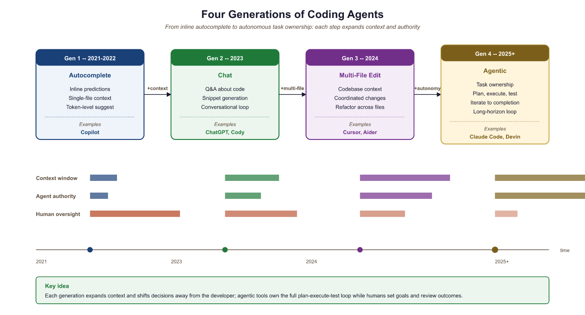

"The best coding agent is not the one that writes the most code. It is the one that understands why the code exists."
Agent X, Context-Aware AI Agent
This section is the 2026 vendor landscape for agentic coding systems. The architectural patterns that make these tools work (self-debug loop, plan-then-execute, tree-of-code, multi-agent code review, search-before-read) are covered in Section 29.1; here we look at the named products that wrap those patterns in shippable form. Claude Code, OpenAI Codex, Cursor, Windsurf, Devin, Aider, and GitHub Copilot Workspace each made different design choices along three axes: terminal-first vs IDE-integrated vs cloud-autonomous, real-time vs background, and free-form vs staged-workflow. Reading this section gives you a tool-selection framework for picking the right product for a given workflow.
Prerequisites
This section builds on code generation agents from Section 29.1, SWE-bench evaluation covered earlier in this chapter, agent foundations from Chapter 26, and tool use and MCP from Chapter 27. Experience using at least one AI coding tool is helpful.
29.4.1 The Rise of Agentic Coding
AI-assisted software engineering has evolved through four distinct generations. The first generation (2021 to 2022) provided inline autocomplete: tools like GitHub Copilot predicted the next few lines of code based on the current file context. The second generation (2023) introduced chat-based assistants that could answer questions about code, explain functions, and generate snippets on request. The third generation (2024) brought multi-file editing capabilities, where tools could understand an entire codebase and make coordinated changes across multiple files. The fourth generation (2025 and beyond) represents the shift to fully agentic coding: autonomous systems that can take a task description, plan an approach, execute the plan across files, run tests, iterate on failures, and deliver a working implementation.
This evolution follows a clear autonomy gradient. Each generation reduces the amount of human steering required while expanding the scope of work the tool can handle independently. The critical shift in the fourth generation is task ownership: the agent does not just help with individual edits, it takes responsibility for completing an entire task from specification to verified implementation.
The benchmark evidence supports this trajectory. On SWE-bench Verified (see Section 26.4), agentic coding systems improved from under 5% resolution rate in early 2024 to over 70% by early 2026. This means that for a curated set of real-world GitHub issues, autonomous agents can now resolve more than two-thirds of them without human intervention. The practical implications are profound: software engineering is being restructured around human-AI collaboration, not human-only workflows.

Gen 3 (2024) multi-file editing with codebase understanding, Gen 4 (2025+) fully agentic systems with task ownership that plan, execute, test, and iterate29.4.2 Claude Code: Terminal-First Agentic Development
Claude Code (released by Anthropic in early 2025) introduced a distinctive approach to agentic coding: a terminal-first architecture that runs directly in the developer's shell. Unlike IDE-integrated tools, Claude Code operates as a command-line agent that reads files, writes files, executes shell commands, and interacts with the developer through a text-based interface. This design choice has significant architectural implications.
The core architecture is a tool loop. Claude Code receives a task from the user, then enters an iterative cycle: it reads relevant files to understand the codebase, formulates a plan, makes edits, runs tests or build commands to verify its work, and iterates if something fails. The tool loop continues until the task is complete or the agent determines it needs human guidance. The tools available include file reading and writing, shell command execution, web search, and any MCP (Model Context Protocol) servers the user has configured.
# Example: CLAUDE.md file for a Python web application project
# This file configures Claude Code's behavior for this specific repository.
## Project Overview
This is a FastAPI application for managing customer support tickets.
The codebase uses Python 3.12, SQLAlchemy 2.0, and Pydantic v2.
## Architecture
- `src/api/` contains FastAPI route handlers
- `src/models/` contains SQLAlchemy ORM models
- `src/services/` contains business logic
- `src/schemas/` contains Pydantic request/response schemas
- `tests/` mirrors the src/ structure with pytest tests
## Development Commands
- Run tests: `pytest tests/ -v`
- Run linter: `ruff check src/`
- Run type checker: `mypy src/`
- Start dev server: `uvicorn src.main:app --reload`
- Run migrations: `alembic upgrade head`
## Code Conventions
- All API endpoints must have Pydantic request and response schemas
- All database operations go through service layer (never call ORM from routes)
- All new features require tests with at least 80% coverage
- Use `from __future__ import annotations` in all files
- Prefer `pathlib.Path` over `os.path`
## Important Constraints
- Never modify migration files that have already been applied
- The `src/core/config.py` file contains secrets references; do not hardcode values
- Rate limiting middleware in `src/middleware/rate_limit.py` must not be disabledThe CLAUDE.md file is a convention that has become central to how developers work with Claude Code. Placed at the project root, it provides the agent with project-specific context: architecture decisions, coding conventions, build commands, and constraints. This file is automatically read at the start of every session, giving the agent the institutional knowledge it needs to make appropriate decisions. The pattern has been adopted by other tools as well (Cursor uses .cursorrules, Windsurf uses .windsurfrules), reflecting a broader trend toward repository-level AI configuration.
Claude Code's permission model provides safety boundaries for the agent's actions. By default, the agent can read any file and execute safe commands (like running tests), but must ask permission before writing files, executing shell commands that could modify state, or accessing network resources. Users can configure broader permissions for trusted operations through a settings file or command-line flags. The hooks system extends this further, allowing developers to register custom scripts that run before or after specific agent actions (for example, running a linter after every file write).
// Example: Claude Code settings with hooks configuration
// ~/.claude/settings.json
{
"permissions": {
"allow": [
"Read",
"Glob",
"Grep",
"Bash(pytest*)",
"Bash(ruff*)",
"Bash(mypy*)",
"Bash(git status)",
"Bash(git diff*)",
"Bash(git log*)"
],
"deny": [
"Bash(rm -rf*)",
"Bash(git push --force*)",
"Bash(git reset --hard*)"
]
},
"hooks": {
"afterWrite": [
{
"command": "ruff check --fix ${file}",
"description": "Auto-fix lint issues after every file write"
}
],
"beforeCommit": [
{
"command": "pytest tests/ -x -q",
"description": "Run tests before allowing a commit"
}
]
}
}allow list grants the agent access to read operations and specific safe commands (pytest, ruff, git status), while deny blocks destructive operations. The hooks section registers custom scripts that run automatically after file writes (lint fixing) and before commits (test execution).MCP integration is what makes Claude Code extensible beyond file and shell operations. Through the Model Context Protocol (see Chapter 27), Claude Code can connect to external services: databases (query and inspect schemas), APIs (interact with Jira, Linear, GitHub), monitoring systems (check deployment status), and custom internal tools. This turns Claude Code from a code editor into a full-stack development agent that can create a Jira ticket, implement the feature, write tests, and open a pull request in a single session.
29.4.3 Background Agents and Multi-Agent Coordination
The next evolution beyond interactive agentic coding is background task delegation. Anthropic's Claude Code introduced the ability to spawn background agents that work on tasks asynchronously while the developer focuses on other work. These background agents run in persistent workspaces (typically cloud-based containers) and can be assigned tasks like "refactor the authentication module to use JWT" or "add pagination to all list endpoints." The developer reviews the results later, much like reviewing a pull request from a teammate.
This pattern extends naturally to multi-agent coordination. A lead agent decomposes a large task into subtasks, assigns each to a background agent, monitors progress, and integrates the results. For example, a feature request might be decomposed into: (1) a database schema change handled by one agent, (2) API endpoint implementation handled by another, (3) frontend integration handled by a third, and (4) test coverage handled by a fourth. The lead agent ensures that the schema agent finishes before the API agent begins, managing dependencies across the workflow.
# Conceptual example: Background agent task delegation pattern
from dataclasses import dataclass, field
from enum import Enum
from typing import Optional
class TaskStatus(Enum):
QUEUED = "queued"
RUNNING = "running"
REVIEW = "awaiting_review"
APPROVED = "approved"
REJECTED = "rejected"
@dataclass
class AgentTask:
"""A task delegated to a background coding agent."""
task_id: str
description: str
workspace_branch: str
dependencies: list[str] = field(default_factory=list)
status: TaskStatus = TaskStatus.QUEUED
agent_session_id: Optional[str] = None
result_pr_url: Optional[str] = None
class BackgroundAgentOrchestrator:
"""Coordinate multiple background coding agents."""
def __init__(self, agent_pool, git_service):
self.pool = agent_pool
self.git = git_service
self.tasks: dict[str, AgentTask] = {}
async def decompose_and_delegate(self, feature_spec: str) -> list[str]:
"""Break a feature into subtasks and assign to agents."""
# Use an LLM to decompose the feature into ordered subtasks
subtasks = await self.plan_subtasks(feature_spec)
task_ids = []
for subtask in subtasks:
task = AgentTask(
task_id=f"task-{len(self.tasks)}",
description=subtask["description"],
workspace_branch=f"agent/{subtask['name']}",
dependencies=subtask.get("depends_on", []),
)
self.tasks[task.task_id] = task
task_ids.append(task.task_id)
# Start tasks whose dependencies are satisfied
await self.schedule_ready_tasks()
return task_ids
async def schedule_ready_tasks(self):
"""Start any tasks whose dependencies are complete."""
for task in self.tasks.values():
if task.status != TaskStatus.QUEUED:
continue
deps_met = all(
self.tasks[dep].status == TaskStatus.APPROVED
for dep in task.dependencies
if dep in self.tasks
)
if deps_met:
# Create branch and assign to an agent
await self.git.create_branch(task.workspace_branch)
session = await self.pool.assign(task)
task.agent_session_id = session.id
task.status = TaskStatus.RUNNINGOpenAI's Codex (released mid-2025) takes a similar approach but with a cloud-first architecture. Codex agents run in sandboxed cloud environments with their own file systems, package managers, and test runners. Each agent receives a task, works in isolation, and produces a diff that the developer can review. The key architectural difference from Claude Code is that Codex agents do not share the developer's local environment; they operate in clean, reproducible containers. This provides stronger isolation (an agent cannot accidentally corrupt the developer's local state) at the cost of reduced access to the developer's full environment context.
29.4.4 IDE-Integrated Agentic Coding: Cursor and Windsurf
Cursor (built on VS Code) represents the IDE-integrated approach to agentic coding. Rather than operating from the terminal, Cursor embeds AI capabilities directly into the editor, providing context-aware completions, inline edits, and a "Composer" mode that can make coordinated changes across multiple files. The key architectural innovation is codebase indexing: Cursor builds a semantic index of the entire repository, enabling the AI to find relevant code across the project without requiring the developer to manually point it to the right files.
The indexing system works by chunking the codebase into semantically meaningful units (functions, classes, modules), computing embeddings for each chunk, and storing them in a local vector database. When the developer makes a request ("add error handling to the payment processing flow"), Cursor retrieves the most relevant code chunks from the index and includes them in the LLM context. This automatic context assembly is what makes IDE-integrated tools feel "magical" to users: the AI seems to understand the entire codebase even though it can only process a limited context window at a time.
# Example: .cursorrules file for a TypeScript project
# This configures Cursor's AI behavior for this repository.
You are working on a Next.js 14 application with TypeScript.
## Architecture Rules
- Use server components by default; add "use client" only when needed
- All data fetching happens in server components or server actions
- Client components live in `components/client/`
- API routes follow REST conventions in `app/api/`
## Code Style
- Use named exports (not default exports)
- Use `interface` for object shapes, `type` for unions and intersections
- Error handling: use Result types from `src/lib/result.ts`, not try/catch
- All async functions must handle errors explicitly
## Testing
- Unit tests use Vitest in `__tests__/` directories
- E2E tests use Playwright in `e2e/`
- Run tests with `pnpm test` (unit) or `pnpm test:e2e` (E2E)
## Do Not
- Do not use `any` type
- Do not import from `@/` paths (use relative imports)
- Do not modify `src/lib/auth.ts` without explicit permission.cursorrules file that configures Cursor's AI behavior for a TypeScript project. Rules cover architecture conventions (server components by default), code style (named exports, Result types), testing setup, and explicit prohibitions. This file lives in the repository root and is automatically included in the AI context for every request.Windsurf (by Codeium, formerly known as the Cascade AI within the Windsurf editor) takes a similar IDE-integrated approach but emphasizes a "Flows" paradigm: multi-step workflows where the AI plans a sequence of actions, presents the plan to the developer, and then executes each step with the developer's approval. This explicit plan-then-execute pattern gives developers more visibility into what the AI intends to do before it does it, trading speed for predictability.
29.4.5 Fully Autonomous Agents: Devin and Its Successors
Devin (by Cognition Labs, announced in March 2024) was the first widely publicized attempt at a fully autonomous software engineering agent. Its architecture separates planning from execution more explicitly than other tools. When given a task, Devin creates a step-by-step plan visible to the user, then executes each step in a sandboxed environment with a code editor, terminal, and browser. The user can observe the agent's work in real-time, intervene to correct course, or let it run to completion.
The planning-execution separation has architectural significance. The planner operates at a higher level of abstraction ("Step 1: understand the current authentication flow by reading the auth module. Step 2: identify all places where session tokens are validated."), while the executor handles the low-level details (opening specific files, running grep commands, writing code). This separation allows the planning model to use a larger, more capable LLM while the executor can use a faster, cheaper model for routine operations.
GitHub Copilot Workspace (announced in 2024, broadly available in 2025) takes a different approach to autonomy. Rather than a general-purpose coding agent, it focuses on the issue-to-PR workflow. Given a GitHub issue, Copilot Workspace generates a specification (what needs to change and why), a plan (which files to modify and how), and then an implementation (the actual code changes). Each stage is visible and editable by the developer, creating a structured workflow where human oversight is built into the process rather than bolted on after the fact.
# Conceptual: Copilot Workspace issue-to-PR pipeline
workflow:
input:
source: "github_issue"
issue_number: 1234
title: "Add rate limiting to the /api/search endpoint"
stage_1_specification:
description: |
The /api/search endpoint currently has no rate limiting.
Heavy usage from automated clients is causing performance
degradation for regular users.
requirements:
- Add per-IP rate limiting of 60 requests per minute
- Return HTTP 429 with Retry-After header when limit exceeded
- Exempt authenticated internal service accounts
- Log rate limit events for monitoring
stage_2_plan:
files_to_modify:
- path: "src/middleware/rate_limit.py"
action: "create"
reason: "New rate limiting middleware using Redis token bucket"
- path: "src/api/search.py"
action: "modify"
reason: "Apply rate limit middleware to search endpoint"
- path: "tests/test_rate_limit.py"
action: "create"
reason: "Unit tests for rate limiting behavior"
- path: "src/config.py"
action: "modify"
reason: "Add rate limit configuration parameters"
stage_3_implementation:
# Agent generates code for each file in the plan
# Developer reviews each file before the PR is created
review_required: true
auto_run_tests: true29.4.6 Comparison Framework
Comparing agentic coding tools requires evaluating them along several dimensions. The following framework captures the most important axes for practitioners selecting a tool for their workflow.
| Dimension | Claude Code | OpenAI Codex | Cursor | Devin | Copilot Workspace |
|---|---|---|---|---|---|
| Interface | Terminal | Web/API | IDE (VS Code fork) | Web (browser-based) | GitHub web UI |
| Autonomy level | High (agent loop) | High (sandbox) | Medium (composer) | Very high (autonomous) | Guided (staged workflow) |
| Context strategy | On-demand file reads | Full repo in sandbox | Codebase index + RAG | Full environment access | Issue + repo analysis |
| Tool access | Shell, files, MCP servers | Sandboxed shell, files | Editor APIs, terminal | Browser, editor, terminal | GitHub APIs, editor |
| Collaboration | Interactive + background | Async (review diffs) | Real-time (inline) | Async (observe/intervene) | Async (review stages) |
| Best for | Full-stack tasks, refactoring | Isolated feature work | Day-to-day editing | End-to-end feature delivery | Issue triage and resolution |
No single tool dominates across all dimensions. Many professional developers use multiple tools in combination: Cursor for real-time editing assistance during focused coding sessions, Claude Code for larger refactoring tasks and multi-step workflows, and Copilot Workspace for triaging and resolving GitHub issues. The tools are complementary rather than competing, each excelling in a different part of the development workflow.
The autonomy spectrum is a design choice, not a quality indicator. Higher autonomy is not inherently better. For security-sensitive code, a guided tool like Copilot Workspace (where the developer reviews each stage) may be preferable to a fully autonomous agent. For exploratory prototyping, maximum autonomy saves time. For day-to-day editing, inline suggestions with minimal disruption may be optimal. The right tool depends on the task, the risk tolerance, and the developer's preference for control versus delegation.
29.4.7 Best Practices for Agentic Coding Workflows
Effective use of agentic coding tools requires adapting your development workflow. The following practices have emerged from the community of developers who use these tools daily.
Invest in your rules file. Whether it is CLAUDE.md, .cursorrules, or .windsurfrules, the project configuration file is the highest-leverage artifact you can maintain. A well-written rules file reduces errors, aligns the agent with your conventions, and eliminates repetitive corrections. Treat it as living documentation: update it when you discover a pattern the agent consistently gets wrong. Include build commands, architecture decisions, naming conventions, and explicit constraints ("never modify the migration files").
Use test-driven prompting. The most reliable way to get correct implementations from an agentic coding tool is to write (or describe) the tests first. When the agent has a concrete specification of expected behavior, it can iteratively write code and run tests until all pass. This mirrors test-driven development (TDD) but with the agent as the implementer and the human as the specifier.
# Example: Test-driven prompting workflow
# Step 1: Human writes the test specification
def test_rate_limiter_allows_under_limit():
"""Requests under the rate limit should succeed."""
limiter = RateLimiter(max_requests=60, window_seconds=60)
for _ in range(60):
assert limiter.check("192.168.1.1") is True
def test_rate_limiter_blocks_over_limit():
"""The 61st request within the window should be blocked."""
limiter = RateLimiter(max_requests=60, window_seconds=60)
for _ in range(60):
limiter.check("192.168.1.1")
assert limiter.check("192.168.1.1") is False
def test_rate_limiter_tracks_per_ip():
"""Different IPs should have independent limits."""
limiter = RateLimiter(max_requests=60, window_seconds=60)
for _ in range(60):
limiter.check("192.168.1.1")
# Different IP should still be allowed
assert limiter.check("192.168.1.2") is True
def test_rate_limiter_resets_after_window():
"""Requests should be allowed again after the window expires."""
limiter = RateLimiter(max_requests=60, window_seconds=60)
for _ in range(60):
limiter.check("192.168.1.1")
# Simulate time passing
limiter._advance_time(61)
assert limiter.check("192.168.1.1") is True
# Step 2: Give the agent this test file and ask:
# "Implement the RateLimiter class so all these tests pass."
# The agent iterates until all tests are green.Incremental verification. Do not ask the agent to implement an entire feature in one shot. Break the work into small, verifiable steps: "First, create the database model and migration. Run the migration and verify it works. Then create the API endpoint. Run the endpoint tests. Then add the frontend component." Each step produces a checkpoint that can be verified before proceeding. This reduces the blast radius of errors and makes it easier to identify where things went wrong.
Human review patterns. Even the best agentic coding tools make mistakes. Establish a review discipline: always review diffs before committing, pay special attention to security-sensitive code (authentication, authorization, input validation), and be skeptical of code that looks correct but that you do not fully understand. The goal is to use the agent to generate a high-quality first draft that a human reviewer can verify and approve, not to accept output without inspection.
Agentic coding tools can introduce subtle security vulnerabilities that pass tests but create real risks. Common examples include: SQL injection through string formatting (instead of parameterized queries), overly permissive CORS configurations, hardcoded secrets in test files that get committed, and authentication checks that are present in the main path but missing in edge-case error handlers. Always include security-focused review as part of your agent-assisted workflow, and consider running SAST (Static Application Security Testing) tools as part of the agent's verification loop.
29.4.8 The 85% Adoption Statistic and Its Implications
By early 2026, surveys consistently reported that approximately 85% of professional software developers use AI coding assistants in their daily workflow. This number, cited by GitHub, Stack Overflow, and JetBrains developer surveys, represents one of the fastest tool adoption curves in software engineering history. For context, it took version control systems (Git) over a decade to reach comparable adoption levels.
The implications for software engineering education are significant. Students entering the workforce in 2026 and beyond will be expected to work with agentic coding tools from day one. This does not mean that foundational programming skills are less important; rather, the skill set expands. Developers now need to be effective at specifying tasks for agents (clear, testable descriptions), reviewing agent output (reading code critically, spotting subtle errors), debugging agent failures (understanding why the agent went wrong and how to redirect it), and maintaining AI configuration (keeping rules files, prompt templates, and tool configurations up to date).
The economic impact is also substantial. Organizations that have adopted agentic coding tools report 30 to 55% productivity improvements for feature development tasks, with the largest gains on boilerplate-heavy work (CRUD endpoints, test generation, documentation) and smaller but still meaningful gains on complex algorithmic work. The productivity gain is not uniformly distributed: experienced developers who can effectively steer agents see larger improvements than junior developers who may struggle to evaluate agent output.
Who: A full-stack developer at a Series A startup building an internal analytics dashboard in Python (FastAPI + React).
Situation: The product manager requested a "CSV export" feature for the analytics dashboard. The developer estimated the task at 2 hours based on similar past features: endpoint creation, service layer logic, access control integration, size limit enforcement, and frontend button wiring.
Problem: The sprint was already overcommitted, and the developer had only 30 minutes before the next meeting. Implementing the feature manually would push it to the following day.
Decision: The developer adopted a test-driven agentic workflow. First, they wrote a CLAUDE.md entry describing the export requirements (data columns, access control rules, 10MB size limit). Then they wrote three test cases: export succeeds with valid data, export fails for unauthorized users, export truncates at the size limit. Finally, they prompted Claude Code: "Implement the CSV export feature. The test file is at tests/test_export.py. Run tests after implementation."
Result: Claude Code read the tests, examined the existing codebase for patterns, implemented the endpoint and service layer across 4 files (~200 lines), ran the tests, fixed two failures on its own, and reported all tests passing. The developer reviewed the diff, made one minor wording adjustment to an error message, and committed. Total time: 25 minutes.
Lesson: Writing tests before prompting the agent creates a tight feedback loop that catches errors during generation rather than during review, making the developer's review pass faster and more confident.
Exercises
Write a CLAUDE.md file for a project you are currently working on (or a project you know well). Include: project overview, architecture description, development commands, code conventions, and at least three explicit constraints the agent should never violate.
Answer Sketch
A good CLAUDE.md includes: (1) A one-paragraph project overview explaining what the application does and its tech stack. (2) A directory layout with purpose annotations. (3) Build, test, lint, and deploy commands. (4) Naming conventions and code style rules. (5) Constraints such as "never modify the database schema directly" or "all API changes require backward compatibility." The file should be concise (under 200 lines) and focused on information the agent needs frequently.
For each of the five tools discussed in this section (Claude Code, Codex, Cursor, Devin, Copilot Workspace), identify one task where that tool would be the best choice and one task where it would be a poor choice. Justify your answers based on the tool's architecture.
Answer Sketch
Claude Code: best for multi-step refactoring requiring shell access and MCP integration; poor for quick inline edits while typing. Codex: best for isolated feature implementation in a clean environment; poor for tasks requiring local database access. Cursor: best for real-time pair programming during focused editing; poor for long-running background tasks. Devin: best for end-to-end feature delivery with minimal supervision; poor for latency-sensitive interactive workflows. Copilot Workspace: best for GitHub issue triage with structured review; poor for exploratory prototyping outside GitHub.
Design a test-driven workflow for implementing a simple REST API endpoint using an agentic coding tool. Write the test cases first, then use the tool to generate the implementation. Document: (a) how many iterations the agent needed, (b) what errors it encountered, and (c) what you would change in the test specification to improve the agent's first-attempt accuracy.
Answer Sketch
Write 5 to 8 test cases covering: success case, validation error, authentication failure, not-found case, and edge cases (empty body, very long input). Run the agent and document its iteration count (typically 2 to 4 iterations for a well-specified endpoint). Common agent errors: missing edge case handling, incorrect HTTP status codes, and overly permissive input validation. To improve first-attempt accuracy: include explicit comments in tests explaining the expected behavior, use descriptive test names, and provide example request/response pairs in the test docstrings.
- Agentic coding tools operate across entire repositories, going far beyond single-line code completion.
- Safety is paramount: sandboxing, command restrictions, and human review of changes are essential guardrails.
- The most effective agentic coding workflows combine autonomous operation for routine tasks with human review for critical changes.
Show Answer
Traditional code completion suggests the next few lines based on the current file context. Agentic coding tools operate autonomously across entire repositories: they can read multiple files, run tests, execute commands, create new files, and iterate on solutions, functioning as a coding collaborator rather than an autocomplete.
Show Answer
Agentic coding tools can execute arbitrary commands, modify files, and access the network. Key safety considerations include sandboxing execution environments, preventing destructive git operations (force push, hard reset), limiting network access, reviewing file changes before committing, and blocking access to sensitive files.
What Comes Next
This section covered the practical landscape of agentic coding tools. For the safety, reliability, and deployment considerations for agentic systems, continue to Chapter 26: Agent Safety, Production & Operations.